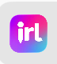
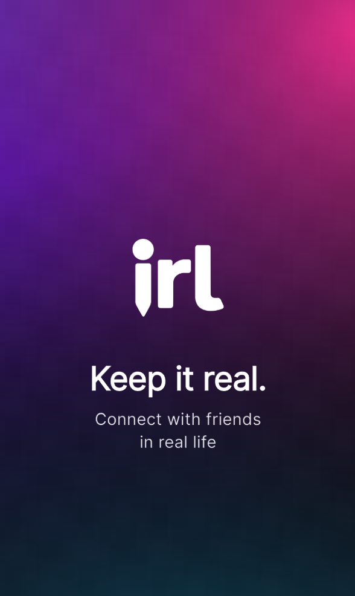
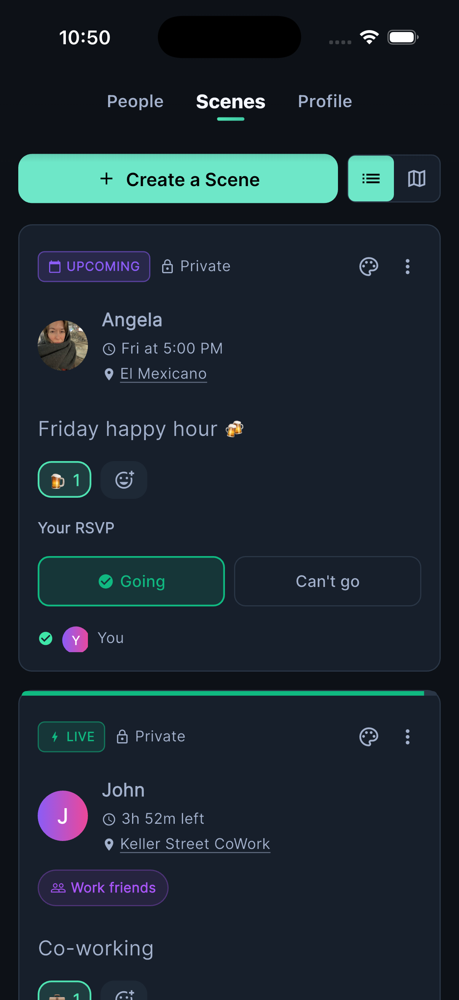
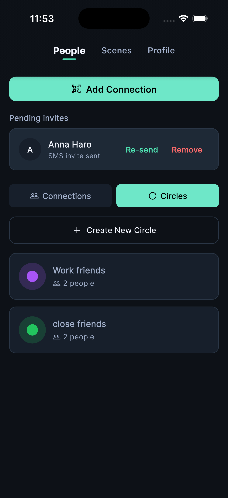
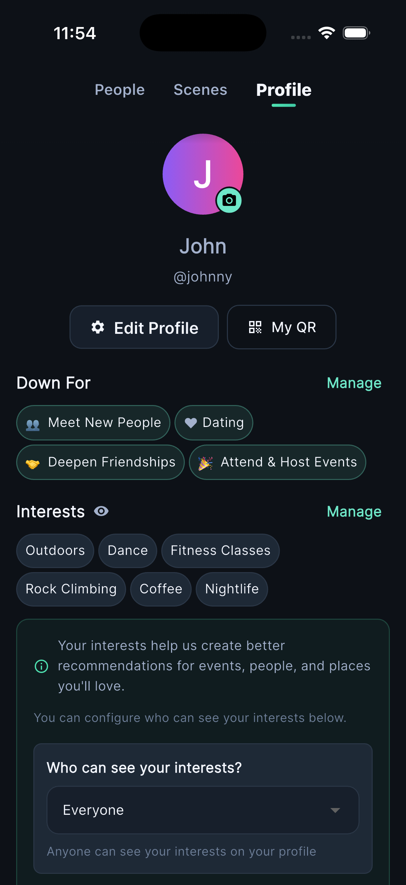
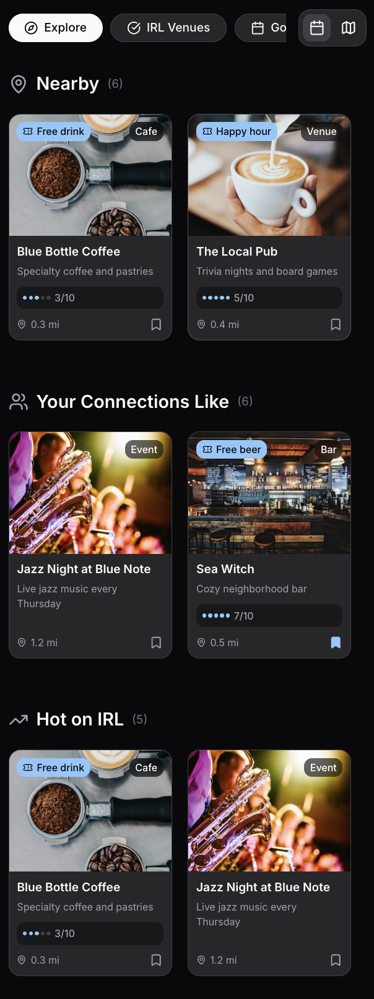

IRL — Public Beta
IRL is the app for people who want less group chat chaos and more actual plans. Discover what's happening around you, coordinate with your circles, and keep the magic going after every gathering.
No waitlist · Free · iOS · Public beta via Apple TestFlight

Three core views — Scenes, Circles, and your Profile — that work together to make real plans happen.

Scenes
See what's happening — plans, hangouts, and moments from your world.

Circles
Your people, organized by how you actually know them. No follower counts, just real connections.

Profile
Your social world at a glance — who you've met, where you've been, what's next.

The Explore tab surfaces the best of what's happening nearby — powered by your network, not an algorithm trying to keep you scrolling.